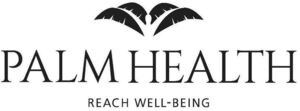

Trade Mark Journal No.2026/006 6 February 2026
WO0000001897836 (44)
Office of origin: United States of America
Date of International Registration:22 August 2025
Date of designation in the UK:
22 August 2025

The mark consists of four palm leaves centered above the stylized words PALM HEALTH which is centered above the stylized words REACH WELL-BEING.
"HEALTH" and "WELL-BEING"
- Class 44
- Health care; medical services; concierge medicine services; wellness and health-related consulting services; primary care medical services; holistic health services; nutrition counseling; medical diagnostic testing, monitoring and reporting services; medical screening; stress reduction therapy; medical counseling relating to stress; mental health services; consulting services in the field of hormone replacement therapy; intravenous (IV) hydration therapy services; intravenous (IV) vitamin therapy services; hygienic and beauty care services; weight management services, namely, providing weight loss and/or weight maintenance programs; providing medical advice in the field of weight loss and weight management; cryotherapy services; infrared sauna services; regenerative medicine services; chiropractic services; acupuncture services; medical, physical rehabilitation and physical therapy services; health spa services for health and wellness of the body and spirit; beauty spa services, namely, cosmetic body care; health spa services for health and wellness of the body and spirit offered at a health club facility; providing educational information about healthcare; providing information in the fields of health and wellness; providing a website featuring information about health, wellness and nutrition; health care services, namely, wellness programs.
Palm Integrative Health LLC
Representative: Shoko Naruo Thompson Coburn LLP, One US Bank Plaza, St. Louis MO 63101, UNITED STATES OF AMERICA